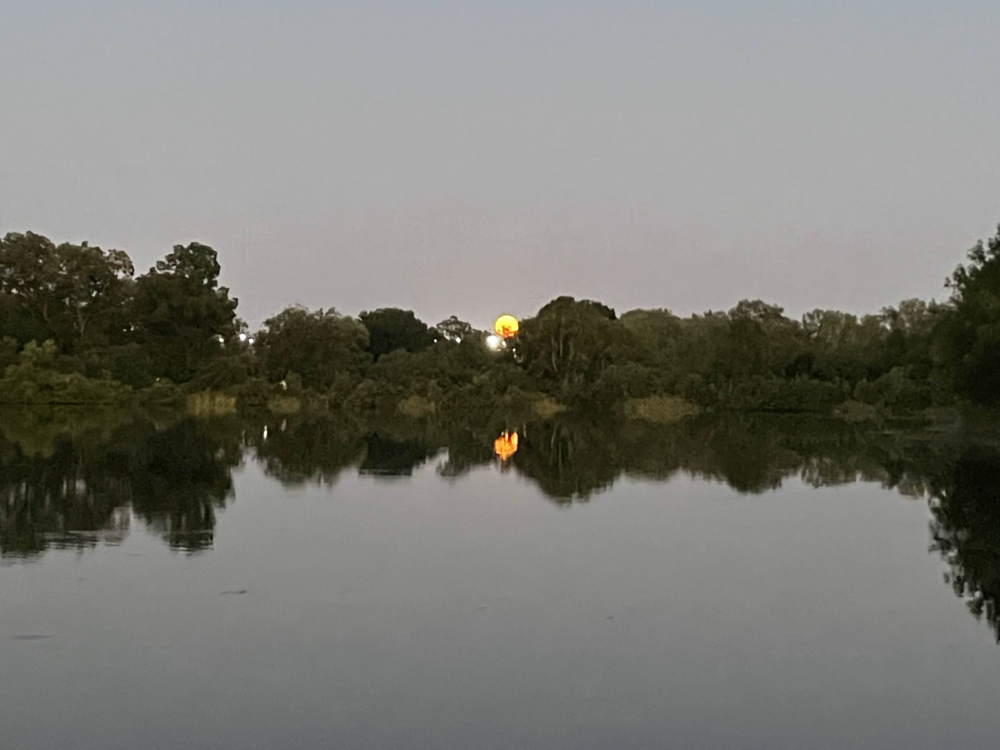
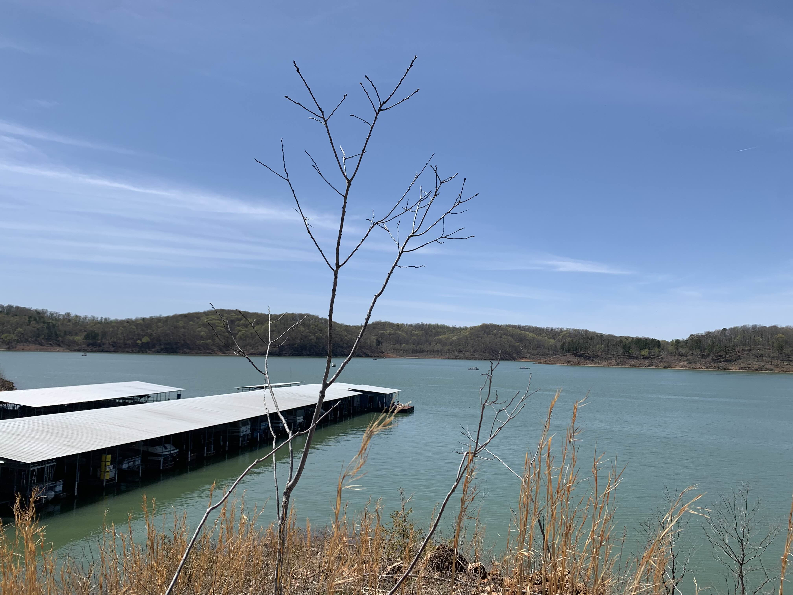
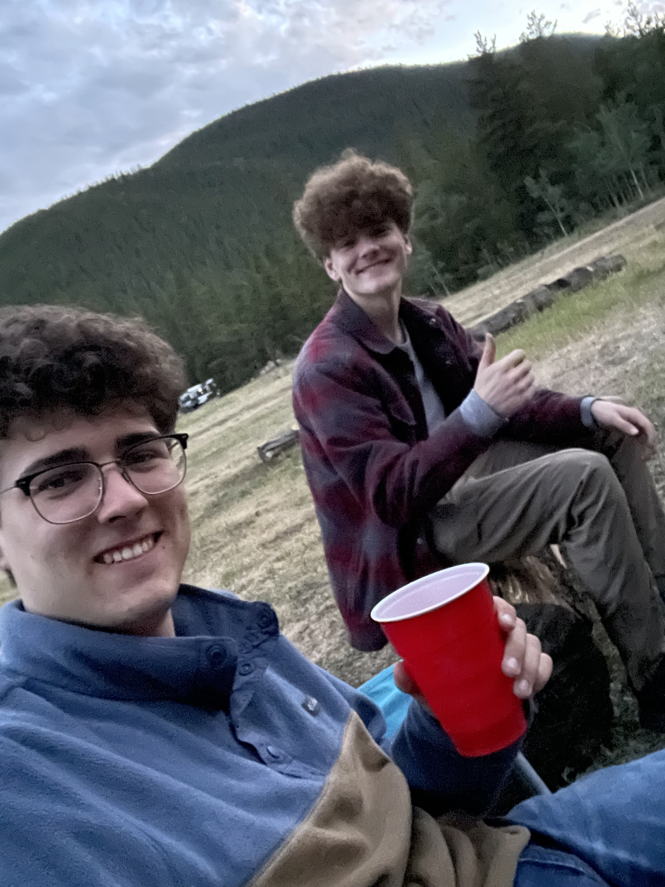
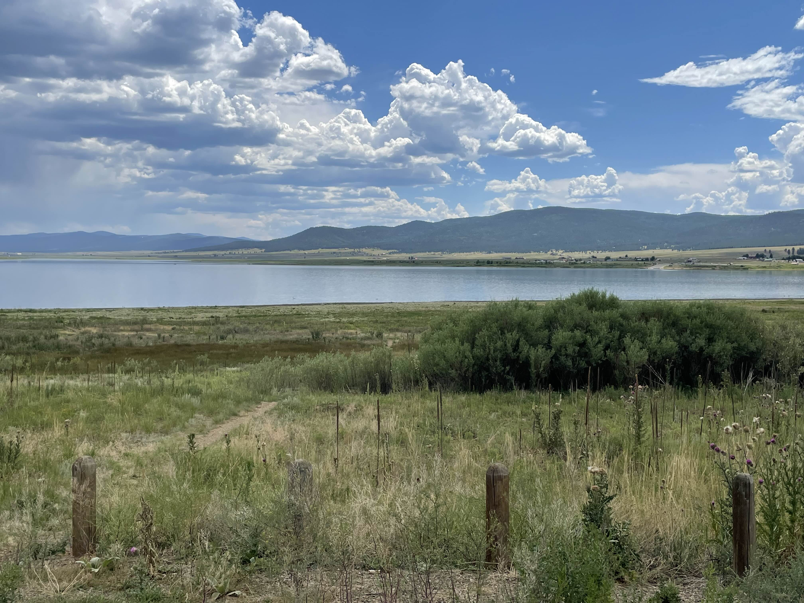

Lodging
The Innsmouth Inn
Beautiful waterfront views, affordable and luxury suites, and live music on Fridays. Is there any place on earth better than the Innsmouth Inn? Enjoy a classic traditional stay with a daily continental breakfast, as well as dock access.

The Campgrounds
You're more of an outdoorsy type? Enjoy our state of the art rustic campgrounds! There is pleny of nature to be enjoyed, and plenty of space to put campers, RV's, tents, and campfires! Just watch out for anything that looks like a deer but moves like a human. Haha, just kidding!

Reviews:
imnevergonnausethisaccount
12/22/1996
WAY TOO COLD!!!
CoolGuyCowboy
4/15/1996
Bro, you went in the middle of winter.
imnevergonnausethisaccount
8/1/2000
i had a blanket
Reviews:
The breakfast was decently good, I would rate ~3.5 stars. The view was stunning, something about the water is just so beautiful and you get a great a great view of it. It almost doesn't look real, I can't put it into words.
Good food, had the clams
Wait I meant to comment on the restaurant, I didn't stay at the Inn. How do I delete this?
This is so weird- How does this place stay open? I haven't seen anyone since I've gotten here. All the lights are on but no one else seems to be here except me. Breakfast is always hot and ready in the morning, but I haven't seen another staff member or even fellow tourist. My room is always impeccably clean when I return, but I've never seen a maid. It's like I have this whole place to myself. 10/10 service, but I feel like I'm going crazy!
I'm not sure what Sarah is talking about, it seems normal to me. Fair amount of tourists. Breakfast is still decently good, I guess that hasn't changed haha.
Can confirm on the breakfast being good, but don't eat the clams. My girlfriend ate them and got super sick.
I don't think you can delete comments let me check.
Yeah you can't
yeah